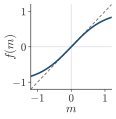
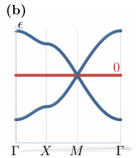

Advanced Quantum Materials 2027 · All lectures · Lecture notes
Session 6. Classical Magnetism and Magnons
6.6 The Stoner threshold as a criterion for magnetism
Does any repulsive \(U>0\) give magnetism, or is there a threshold? We will now see that the nonmagnetic state becomes unstable towards a uniform magnetization when the product of \(U\) and the density of states at the Fermi level reaches one, which is the Stoner criterion. Then we follow the half-filled chain, whose staggered moment needs no threshold, to large \(U\), where the moment saturates and mean field stops being reliable.
\[m = \langle c_\uparrow^\dagger c_\uparrow\rangle - \langle c_\downarrow^\dagger c_\downarrow\rangle. \tag{6.2}\]
\[g(\omega) = \int_{\text{BZ}} \frac{d^dk}{(2\pi)^d}\; \delta\!\left(\omega-E(\mathbf{k})\right). \tag{2.16}\]
This is the magnetization \(m\) of one site of Section 6.3, and the density of states \(g(\omega)\) of Section 2.9. It counts the states per unit of energy and per unit length, area or volume, for one band and one spin. For a lattice with one site in a cell of unit size it is the density of states per site and per spin.
We write the mean-field bands as \(E_\sigma(\mathbf{k}) = E(\mathbf{k}) - \sigma\, \tfrac{U}{2}m\) for \(\sigma=\pm1\), meaning spin up and down, where \(m\) is the self-consistent magnetization of (6.2). At zero temperature, the self-consistency condition is
\[m = \sum_{\mathbf k}\Big[n_F\big(E(\mathbf k)-\tfrac{U}{2}m\big) - n_F\big(E(\mathbf k)+\tfrac{U}{2}m\big)\Big].\]
If we expand the right-hand side for small \(m\) we obtain \(m \approx U\,m\,D(E_F)\), where \(D(E_F)\) is the density of states at the Fermi level. The trivial solution \(m=0\) always exists, but a nontrivial solution appears when the linear coefficient reaches one, which gives the condition (6.3).
The nonmagnetic state is unstable towards a uniform magnetization when
\[U\, D(E_F) \geq 1. \tag{6.3}\]
Here \(D(E_F)\) is the density of states per spin and per site at the Fermi level. The product decides, and not \(U\) alone.
The steps From the self-consistency condition to the Stoner criterion (6.3)
We write \(x=Um/2\), and the sum over \(\mathbf k\) is normalized by the number of momenta of the zone, so that it is a sum per site. The simplest case is a constant density of states \(D\) per spin around \(E_F\). The sum becomes an integral over the energy, and at zero temperature the bracket is one for \(E_F-x<E<E_F+x\) and zero elsewhere, as long as \(E_F\pm x\) stays inside the band. So
\[m=\int dE\,D\,\big[n_F(E-x)-n_F(E+x)\big]=2xD=U\,m\,D,\]
meaning that the right-hand side is a straight line in \(m\) with the slope \(UD\).
For a general density of states we expand the bracket to first order in \(x\),
\[n_F(E-x)-n_F(E+x)\simeq-2x\,\frac{\partial n_F}{\partial E},\]
and at zero temperature \(-\partial n_F/\partial E=\delta(E-E_F)\). The sum of this delta function over \(\mathbf k\) is the density of states per spin and per site, so
\[m\simeq U\,m\,\frac1N\sum_{\mathbf k}\delta\big(E(\mathbf k)-E_F\big)=U\,m\,D(E_F).\]
The total density does not change at this order, since one spin gains what the other loses, so \(E_F\) stays where it is. The slope of the right-hand side at \(m=0\) is \(UD(E_F)\). When this slope is above one, a small \(m\) gives back a larger one, so the state with \(m=0\) is unstable, which is (6.3). The expansion holds only for small \(m\), when \(Um/2\) is small against the energy over which \(D(E)\) changes around \(E_F\). So it tells us when the state with \(m=0\) becomes unstable, and not how large \(m\) is above the threshold.
This condition is called the Stoner criterion. Here \(D(E_F)\) is the density of states \(g(\omega)\) of (2.16) at \(\omega=E_F\). In Session 9 the same criterion comes back as the divergence of the spin response, \(U\chi_0(q,0)=1\) in (9.8), which at \(q=0\) is the condition that we have here. Below the threshold a small magnetization dies away, so the state with \(m=0\) is stable against it. Above the threshold the nonmagnetic solution becomes unstable, and a finite \(m\) appears spontaneously.
This is the reason why some metals with a sizable Coulomb repulsion, such as aluminum or lead, stay nonmagnetic. Their density of states at the Fermi level is too small for the product in (6.3) to reach one. Iron and cobalt, on the other hand, have a large density of states from their narrow \(d\) bands together with a sizable effective \(U\), so they are clearly above the threshold.
In the numerics we see what (6.3) predicts. The self-consistent magnetization of the chain stays at zero below a critical \(U\), and it is finite above it. In mean field it does not grow continuously, since the uniform chain jumps to the full moment. At \(n=0.2\) it jumps from \(m=0\) to \(m=0.2\) at \(U=1.93t\), just below the value \(1.94t\) of (6.3). The cell of the notebook can end at a moment between \(0\) and \(0.2\). At \(U=1.8t\) its title shows \(0.13\), for a state above \(m=0\) in energy that the finite k-mesh keeps, while it shows \(0\) at \(1.2t\) and \(0.2\) at \(2.4t\). Figure 6.1 shows why a nontrivial solution of the self-consistency condition only exists above the threshold, for a model of \(f(m)\) where the magnetization grows continuously.

In twisted bilayer graphene the two sheets are stacked at a small twist angle, and the resulting flat superlattice minibands are expected to enhance the interaction between the electrons strongly. The article presents evidence that near three-quarters filling of the conduction miniband the enhanced interaction drives the bilayer into a ferromagnetic state. The probe is the anomalous Hall resistance, which shows a ferromagnetic hysteresis and is as large as \(10.4\) k\(\Omega\). The measurement is in this article. The abstract does not name the Stoner criterion, and our reading is that the flat minibands give a large \(D(E_F)\), so that \(UD(E_F)\) reaches one.
The self-consistency condition of a uniform magnet is \(m=f(m)\). Here we take the model
\[f(m)=\tanh(s\,m),\qquad s=U\,D(E_F),\]
whose slope at \(m=0\) is \(s\). Each picture shows \(f(m)\) and the dashed line \(y=m\). Which one gives a magnetized solution?



Show the answers
- A. ✗ False
This is false. The slope at \(m=0\) is \(UD(E_F)=0.5\), below one. The curve stays under the line \(y=m\) for \(m>0\), for instance \(f(0.5)=0.24\), so the only crossing is \(m=0\).
- B. ✗ False
This is false. The slope at \(m=0\) is one, the threshold itself, where the linear term does not decide. For this \(f\) the next term bends the curve down, with \(f(0.5)=0.46\), so it touches the line \(y=m\) only at \(m=0\).
- C. ✓ True
This is true. The slope at \(m=0\) is \(UD(E_F)=1.5\), above one, so the curve starts above the line \(y=m\). It saturates, so it has to come back under the line, and it crosses it at \(m_0=\pm0.86\), which are the magnetized solutions.
A flat band has a very large density of states \(D(E_F)\) at the Fermi level. The Stoner criterion reads
\[U\,D(E_F)\geq1.\]
How large must \(U\) be for magnetism?
Show the answers
- A. ✗ False
This is false. Take a flat band of width \(W=0.1t\), with \(D(E_F)\approx10/t\). Then \(U=0.1t\) already gives \(UD(E_F)=1\), which is far below \(4t\).
- B. ✗ False
This is false. The criterion has no condition on the dispersion. When \(W\to0\) we get \(D(E_F)\to\infty\), so any \(U>0\) gives \(UD(E_F)>1\) and magnetism appears.
- C. ✓ True
This is true. When \(D(E_F)\) is large, a small \(U\) reaches the threshold \(UD(E_F)=1\), and this is why flat bands are good places to look for magnetism.
Notebook check-in: session6.ipynb, “(Exercise) Intermediate coupling regime and Stoner instability”
Reproduce the threshold behavior of (6.3) directly. Compute the self-consistent magnetization as a function of \(U\), and find the critical interaction at which \(m\) first becomes nonzero.
Notebook check-in: session6.ipynb, “(Exercise) Magnetism in flat bands”
In principle, a flat band has a divergent density of states at \(E_F\), so the Stoner product \(U D(E_F)\) in (6.3) is above the threshold for practically any \(U>0\). This exercise is the natural numerical extension of the Stoner criterion, since a flat-band system is the case where it is easiest for magnetism to appear.
The flat bands of Section 2.11b are the clearest case of this. The Lieb lattice has a band that is exactly flat, so its density of states at that energy is infinite.

One important consequence ends this section and starts the next one. From (6.3), magnetism in general needs \(U D(E_F) \gtrsim 1\), and for a reasonable bandwidth this usually means that \(U\) has to be comparable to \(t\) or larger, and not smaller. However, mean-field theory itself is only reliable for \(U \ll t\), as we saw in Section 6.3. So the regime where magnetism appears is, in general, the same regime where the method that we have been using stops working. We need a different approach for \(U \gg t\), and we construct it in the rest of this session.
6.7 The strongly localized limit, where mean field breaks down
Let us look again at the half-filled chain of Section 6.4, but now we follow the magnetization per site as \(U\) grows from zero to very large values. At \(U=0\) there is no interaction and \(m=0\). When \(U\) increases, \(m\) grows, and for \(U\to\infty\) it saturates at exactly one Bohr magneton per site. This is a full localized spin-\(1/2\) moment on every site, and the moments point in alternating directions on the two sublattices, which is the Ising-like antiferromagnetic state to which the numerics converge.
This saturation tells us something physical, which is that in the large-\(U\) limit the electrons stop moving completely. If an electron hops onto a neighboring site that is already occupied, this costs an energy \(U\). When \(U\gg t\) this cost is too large, so each site keeps its one localized electron, and only its spin can still fluctuate. For this reason, in this limit perturbation theory should not be organized around the kinetic term, as mean field does implicitly, but around the localized state. We take the interacting and localized configuration as the ground state at zeroth order, and we treat the hopping as a small perturbation on top of it. We see in Schematic 6.5 how the chain gets there. The moment on a site grows with \(U\) and goes to one, and the fraction of doubly occupied sites goes to zero.

g2_chain_moment.py
The half-filled chain at \(U=16t\) has the moment \(|m|=0.984\) on every site. In mean field the double occupancy is a product of the two densities,
\[\langle n_\uparrow n_\downarrow\rangle=\langle n_\uparrow\rangle\langle n_\downarrow\rangle,\qquad \langle n_\uparrow\rangle=\tfrac12(1+m),\quad \langle n_\downarrow\rangle=\tfrac12(1-m).\]
What is \(4\langle n_\uparrow n_\downarrow\rangle\)?
Show the answers
- A. ✓ True
This is true. The product gives \(4\langle n_\uparrow n_\downarrow\rangle=(1+m)(1-m)=1-m^2\), and \(1-0.984^2=0.03\). This is \(3\) percent of the value \(1\) at \(U=0\), where the two spins are independent, so the electrons almost stop moving.
- B. ✗ False
This is false. This is \(m^2\), and not \(1-m^2\). At \(U=0\) we have \(m=0\), the two spins are independent and \(4\langle n_\uparrow n_\downarrow\rangle=1\), while \(m^2\) would give \(0\).
- C. ✗ False
This is false. This is \(1-|m|\), which leaves out the factor \(1+|m|\). At \(U=4t\), where \(|m|=0.77\), the product gives \(1-m^2=0.41\), while \(1-|m|\) gives \(0.23\).
A half-filled band has a constant density of states \(D=1/W\) per spin and per site over a width \(W\). Find the interaction \(U_c\) above which the paramagnet is unstable towards a uniform magnetization.
Solution
The density of states is normalized, since \(\int D\,dE=W\cdot\tfrac1W=1\), one state per spin and per site. For a constant density of states the self-consistency condition is linear in \(m\), as long as \(E_F\pm Um/2\) stays inside the band,
\[m=U\,m\,D=\frac{U}{W}\,m,\]
so the slope at \(m=0\) is \(U/W\). By (6.3) the paramagnet is unstable when \(UD(E_F)\geq1\), which gives
\[U_c=W.\]
For \(W=4t\) this is \(U_c=4t\). The threshold depends on the band only through \(D(E_F)\), so a narrower band with the same number of states has a smaller threshold. The chain has the same width \(4t\), but its density of states is largest at the band edges and lowest at the center, where \(D(0)=1/(2\pi t)\) is below \(1/W\). So the half-filled chain is unstable towards a uniform magnetization only above \(2\pi t\), about \(6.3t\), and not above \(4t\). The saturated ferromagnet, a solution from \(4t\) on, is already lower than the paramagnet from \(16t/\pi\), about \(5.1t\), so in mean field the uniform chain jumps to the full moment before this instability. In a calculation we only need the density of states at the Fermi level to check the criterion. With pyqula it is what h.get_dos(nk=2000, delta=0.02) gives for the spinful Hamiltonian, divided by 2 for the two spins and by the number of sites of the cell. The k-mesh has to resolve the broadening delta. With the default nk and delta the value on the chain can be off by up to \(18\) percent close to the center of the band, above or below, depending on the energy.
- In Section 6.8 the limit \(U\gg t\) gives the Heisenberg model, which takes over where mean field stops working.
- In Section 8.13 a flat band of \(f\) levels meets a dispersive band, and the anti-crossing gives the Kondo insulator.
- In Section 9.5b the Stoner criterion comes back as \(U\chi_0(q,0)=1\), and at a finite \(q\) it gives a modulated magnetization.